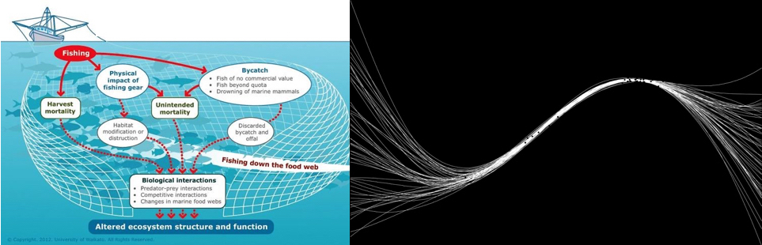

I’m currently a post-doctoral researcher with Stephan Munch at the NOAA, Southwest Fisheries Science Center. I am working on developing model free multi-species management methodologies through the combination of non-parametric methods, dynamic programming and multi-objective optimization. My interests are broad and I am generally motivated by the application of both statistical and mathematical methodologies to answer interesting questions.
I received my Ph.D from the department of Applied Mathematics & Statistics at the University of California, Santa Cruz in Prof. Mangel's lab. Through an integrated approach of field work, laboratory work and both statistical and mathematical modeling I developed methods to better understand how water temperature, individual food consumptions and competitive interactions affect the growth, survival and migratory tendencies of Steelhead.
Before then, I did received B.S. in Applied Mathematics from the University of California, Merced. While at UC Merced, I was part of Prof. Ghezzehei's soil physics lab, where I worked on problems related to solute transport in saturated porous media and soil aggregate formation.
